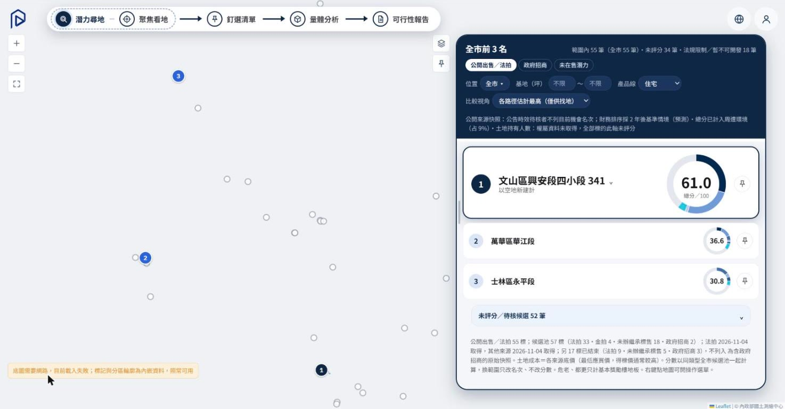
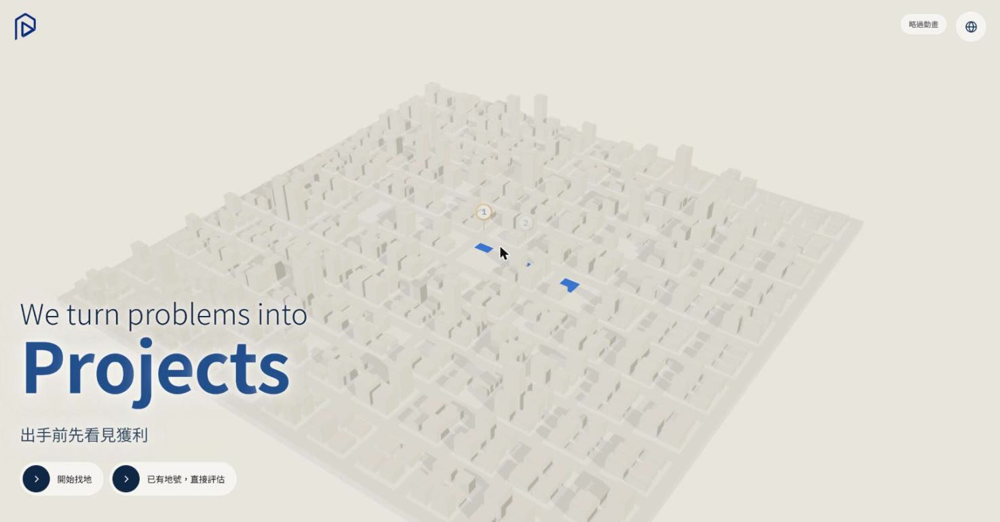
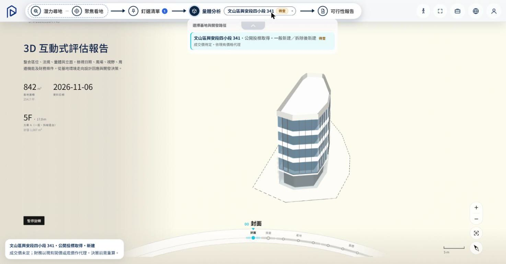
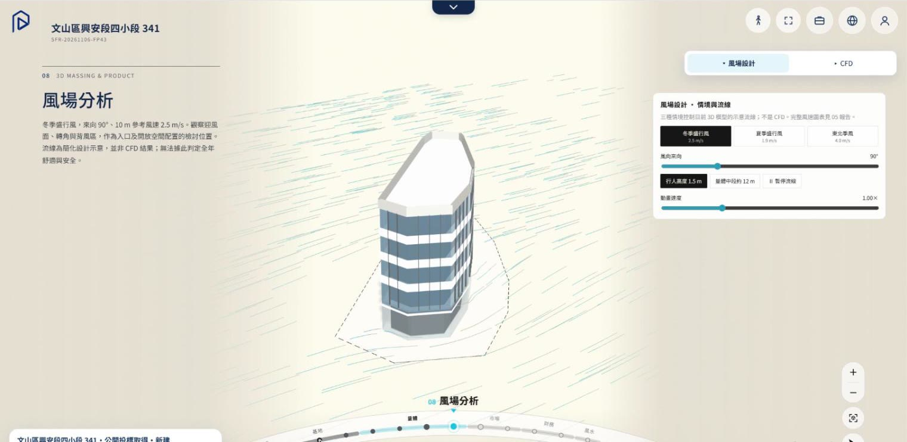
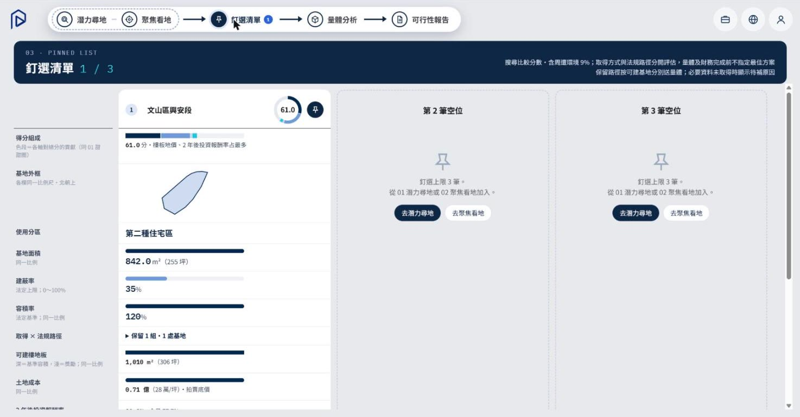

開發· SERVICES
這塊地買不買？蓋什麼最賺？
對象建商開發部
你的團隊
幫我在市中心找 500 坪以上、可以蓋住宅的地幫我在市中心找 500 坪以上、可以蓋辦公的地幫我在市中心找 500 坪以上、可以蓋商場的地
AEC PRISM
- 找地篩選
- 法規與容積試算
- 周邊機能評分
- 量體方案
- 財務試算
你拿到
我們是
FROM DATA TO A SMARTER BUILT ENVIRONMENT
讓資訊直接成為決策依據。
01建商開發部
這塊地買不買？蓋什麼最賺？
02建築師、業主設計管理
哪個方案過得了、蓋得出來、成本控得住？
03營造廠、業主工務
進度落後沒？做得跟圖一樣嗎？這期該付多少？
04業主、物管
設備什麼時候該修？營運成本怎麼壓？
SERVICES
要做的事AI 怎麼幫你拿到
VISION
建築產業累積了大量資訊，但多數仍停留在檔案中。AEC PRISM 的目標，是讓這些資訊能被查詢、檢核與使用，成為日常決策的依據。
我們不賣現成的軟體。我們為你的專案，客製 AI 建築應用。
RESULTS





IMPACT
30%節省成本
60%節省時間
95%準確度
4.9/ 5合作滿意度
WHY NOW
AI 的能力正以月為單位快速進步。建築產業累積多年的圖面、模型與文件，終於能真正被查詢、比對與使用。
不做傳統 BIM。現在開始，讓團隊比別人早一步，把資訊變成決策的依據。
START A CONVERSATION
從一個問題開始就好。我們會先確認你的需求，再說明可行的做法。
HOW WE WORK